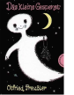

Das kleine Gespenst

Der letzte Schlag der Eulenberger Rathausuhr verklingt: Mitternacht. Aber nanu -- huscht da nicht nebenan auf Burg Eulenstein eine schneewei?e Gestalt uber die Zinnen? Naturlich -- es ist das kleine Gespenst! Seit uralten Zeiten wohnt es dort, tut niemandem etwas zuleide und ist uberhaupt ganz freundlich. Eigentlich liebt das kleine Gespenst den Mond und die Nacht. Ware es allerdings nicht schrecklich aufregend, die Welt einmal bei Tag zu sehen? Freund Herr Schuhu (der Uhu) rat ab. Auch ist jeder Versuch vor dem Morgengrauen nicht wieder einzuschlafen umsonst, bis eines Tages das kleine Gespenst punktlich um zwolf aus seiner Schlaftruhe schwebt und Sonnenlicht erblickt. Kein Wunder: Es ist aus scheinbar unerklarlichen Grunden zwolf Uhr mittags. Die Freude daruber verfliegt jedoch schnell, als Mensch und Gespenst aufeinander treffen. Vom ersten Sonnenstrahl schwarz verfarbt, fluchtet d